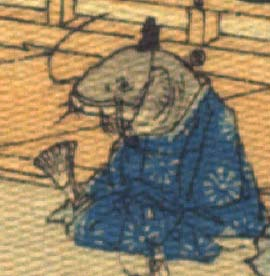

鯰の化物。頭部は墨色で、目は小さく、口の左右から細長いひげが生えている。烏帽子状のものをかぶっている。体に青色の公家装束をまとい、右袖に扇子を持って座っている。
著作者：J.Dautremer／出典：親書誌：U426_nichibunken_0118：Monseigneur sac de riz／日付：2006／資源識別子：U426_nichibunken_0118_0003_0022
Copyright (c)2010- International Research Center for Japanese Studies, Kyoto, Japan. All rights reserved.